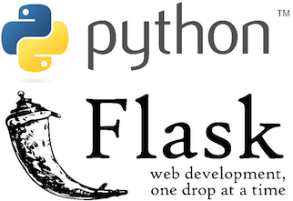
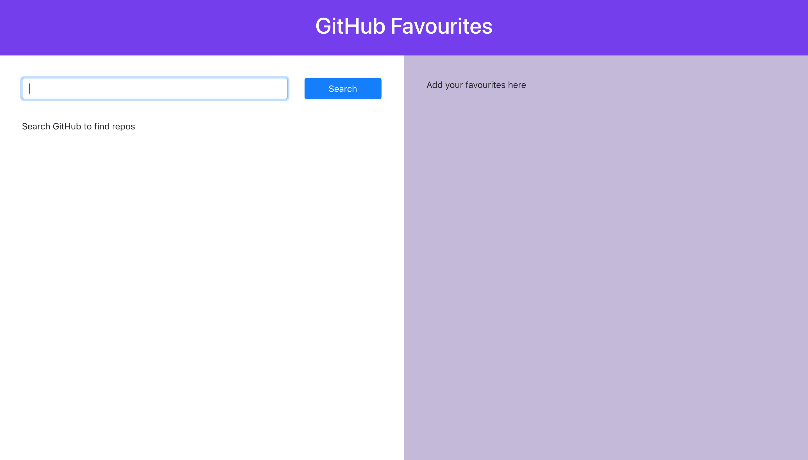

Sid Koparde
Web Developer


Projects

Python Flask API
A JSON API made using Flask, Python, and SQLite

React GitHub Dashboard
A Dashboard made with React and Bootstrap that can query GitHub repositories. You can then add repos to a list of favourites.

NodeJS API
A JSON API made with NodeJS and Docker. I use PostgreSQL for the database and JSON Web Tokens for authentication. I've written tests using Chai and Mocha.